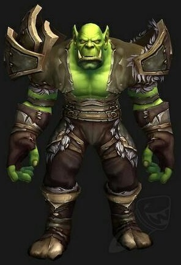
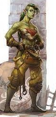
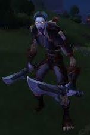
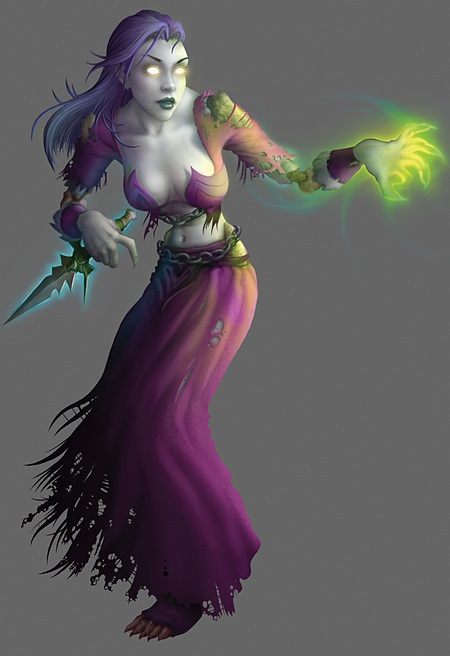

| Raza | Descripcion | Imagen | Clases Disponibles |
| Orcos |
A diferencia de las demás razas de la Horda, los orcos no son naturales de Azeroth. Al principio, vivían como clanes chamánicos en el exuberante mundo de Draenor. Abandonaron su pacífica cultura cuando Kil’jaeden, un Señor demoníaco de la Legión Ardiente, corrompió a los orcos y los utilizó para llevar a cabo su venganza contra los draenei, que habían sido exiliados de Argus. |
  |
Cazador, Pícaro, Chamán, Brujo, Guerrero, Caballero de la Muerte, Mago, Monje |
|
No Muertos, Renegados |
Los no-muertos de Entrañas, también conocidos como los Renegados, están afiliados a la Horda más por necesidad que por simpatía, proveen a su facción de combatientes mágicos y alquimistas destacados. En su peor momento, los no-muertos Renegados fueron reunidos por la antigua general forestal de Quel’Thalas, Sylvanas Brisaveloz. Derrotada en un ataque contra su reino y transformada en una poderosa alma en pena de la Plaga, Sylvanas también había recuperado su libertad de manos del Rey Exánime. Bajo la tutela de su nueva reina, los no-muertos independientes, conocidos como Renegados, establecieron Entrañas bajo las ruinas de la Ciudad Capital Lordaeron. Aunque algunos Renegados temían a Sylvanas, otros valoraban la seguridad que les proporcionaba. Sin embargo, muchos de los no-muertos con voluntad propia encontraron un propósito para su existencia maldita a través del deseo ardiente de la Reina alma en pena de destruir al Rey Exánime. |
  |
Mago, Sacerdote, Pícaro, Brujo, Guerrero, Caballero de la Muerte, Cazador, Monje |
| Tauren |
Grandes, fuertes y con un gran espíritu, los tauren de Cima del Trueno mantienen un nexo inquebrantable con la Madre Tierra. Los Tauren o shu'halo en Taur-ahe, su lengua nativa, son unas enormes criaturas nómadas que viven en las verdes y amplias planicies de Mulgore, en la zona central de Kalimdor. Los Tauren son grandes y musculosos humanoides, de apariencia bovina con pezuñas y cuernos. Miden alrededor de dos metros y su peso medio es de 250 kilos. Sus inmensos cuerpos están cubiertos con un fino y corto pelaje, que varía en color desde el negro, gris, blanco, rojo, café y todas las combinaciones de moteados y variaciones posibles. Después de generaciones llevando una existencia nómada, los tauren han construido recientes asentamientos permanentes en Mulgore y Los Baldíos. |


|
Druida, Cazador, Chamán, Guerrero, Caballero de la Muerte, Paladín, Sacerdote. |
| Trols lanza negra |
Durante el éxodo de Thrall desde Lordaeron, la Horda rescató a los trol de selva de la tribu Lanza Negra de una misteriosa bruja del mar. Los Lanza Negra, en deuda con Thrall y los orcos, se aliaron con la Horda como gratitud. Su relación con los nobles orcos y los tauren ha comenzado a cambiar la naturaleza salvaje de los trol, aunque éstos no reconocen su legado oscuro. La Horda les ha traido camaradería, buenos modales y en menor medida, amabilidad |


|
Druida, Guerrero, Cazador, Mago, Sacerdote, Pícaro, Chamán, Brujo, Caballero de la Muerte, Monje. |
| Elfos de sangre |
Los elfos de sangre, sin'dorei en thalassiano ("hijos de la sangre"), son una raza élfica nativa de Azeroth, procedentes del antiguo reino elfo de Quel'Thalas. Su nombre es la identidad que la gran mayoría (aproximadamente el 90%) de los elfos nobles supervivientes tomaron tras de la Tercera Guerra. Inspirados por el renacimiento de La Fuente del Sol, los elfos de sangre han entrado en una nueva era brillante de la historia de su antigua raza. Aunque algunos elfos aún dudan a la hora de abandonar su dependencia de la magia arcana, otros han abrazado el cambio hacia el mejoramiento de Quel'Thalas. Pero solo el tiempo dirá si los elfos de sangre pueden evitar repetir los trágicos errores de su pasado. |


|
Brujo, Cazador, Guerrero, Mago, Monje, Paladín, Sacerdote, Pícaro, Caballero de la muerte, Cazador de demonios. |
| Goblins |
Los goblin son pequeños humanoides, astutos y perspicaces, con un gran interés por el comercio y en los objetos mecánicos. La sociedad goblin está estructurada en cárteles comerciales liderados por los príncipes comerciales. Los confabuladores y timadores goblin van siempre en busca del mejor negocio posible. A pesar de su naturaleza caótica existe una estricta jerarquía que divide a los miembros de su sociedad desde los príncpes mercantes hasta los esclavos. El resto de razas ven a los goblin como inventores, comerciantes, mercenarios y, sin excepción, maníacos. Los goblin valoran la tecnología como un aspecto muy útil en el comercio. Unos dicen que su ventaja - y su maldición - es ser los principales usuarios de tecnología en un mundo gobernado por la magia. Mientras los Enanos y Gnomos comparten gustos similares, la tecnología goblin es de mayor envergadura y siniestra por lo que tiene un mayor impacto sobre el mundo natural. |


|
Caballero de la muerte, Cazador, Mago, Sacerdote, Pícaro, Chamán, Guerrero, Brujo, Monje. |